Welcome to OpenConstruction
Welcome to OpenConstruction. This short orientation will help you understand how the platform is organized before you explore individual features.
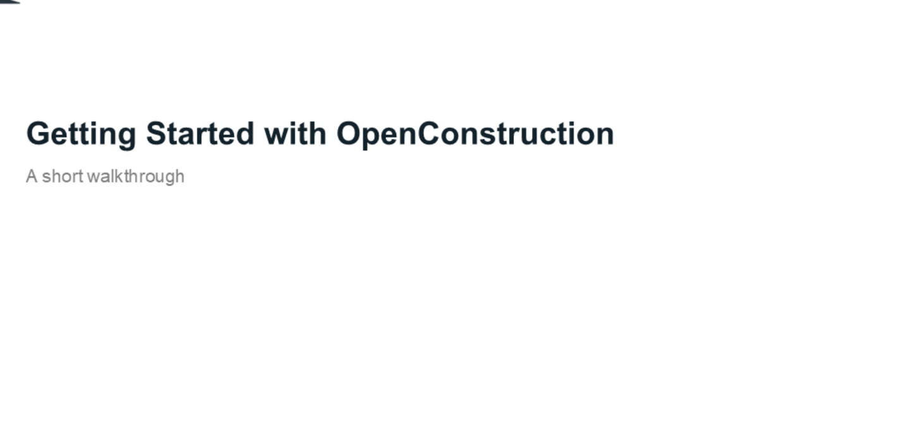
Explore the Homepage
Start on the homepage. This is the front door of OpenConstruction and the place to see the main resource areas at a glance.
Use Homepage Search
You can search across resources from the homepage. The search experience helps you quickly find datasets, models, workflows, and educational resources.
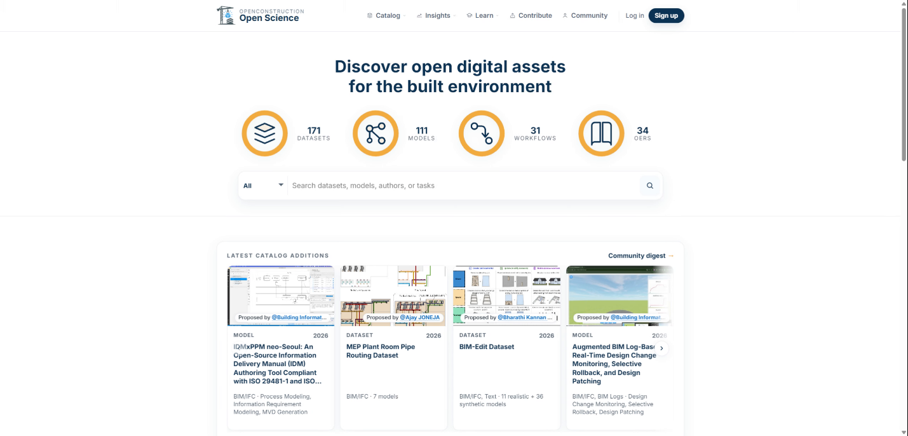
Browse Resources in Catalogs
Use the catalogs when you want to browse reusable resources directly. OpenConstruction catalogs include datasets, models, workflows, and open educational resources.
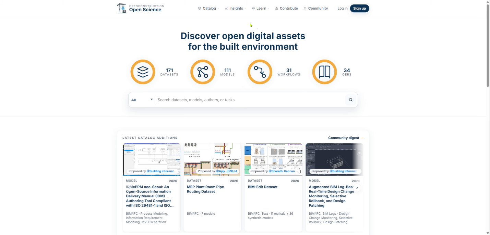
Search and View Catalog Details
Within each catalog, you can search, filter, and browse resources. Open a detailed record to learn more about a resource and access its original source.
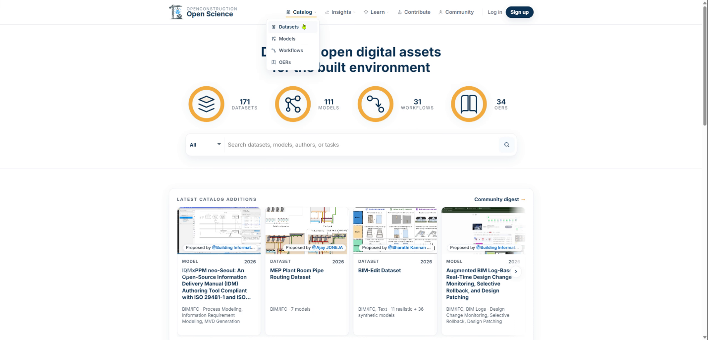
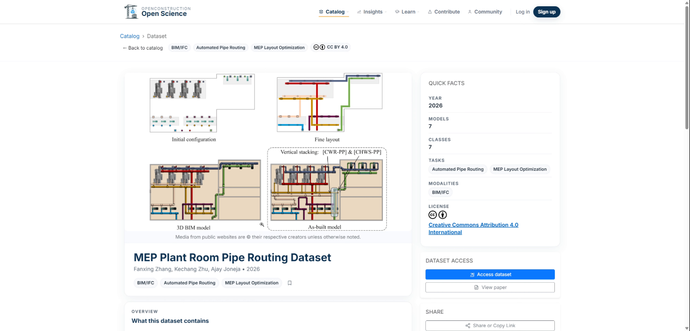
Review Dataset License Terms
Before using a dataset, review its license and access terms. On the dataset detail page, click the checkbox to confirm that you have reviewed the terms.
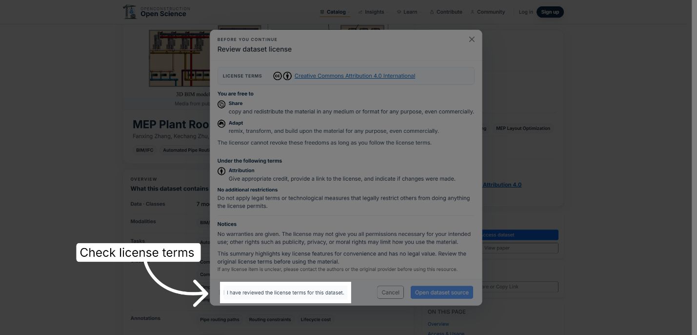
Open Insights
Open Insights to understand the broader landscape of AEC data, models, tasks, and performance. Analytics provides a high-level view of patterns across tasks and applications, datasets and models, data modalities, license information, geographic coverage, and catalog growth over time.
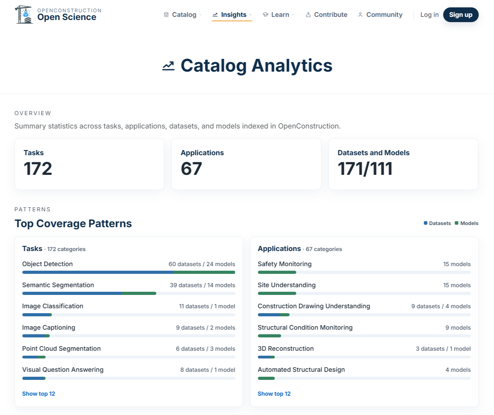
Explore Benchmarks
Use the Benchmark Explorer when you want to examine evaluation evidence more closely. Browse benchmark tasks and applications, identify associated datasets and models, and inspect reported performance results.
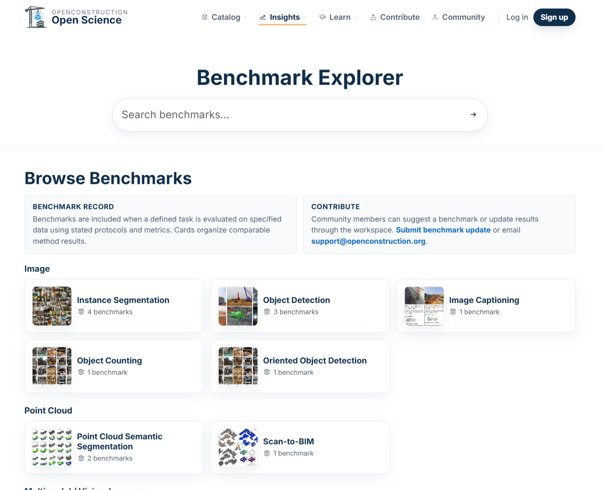
Watch Tutorial Walkthroughs
Use Learn when you need guidance on how to use OpenConstruction or want to better understand its standards and practices. The Tutorial area provides short walkthrough videos for common tasks, including finding resources, submitting contributions, and reporting issues.
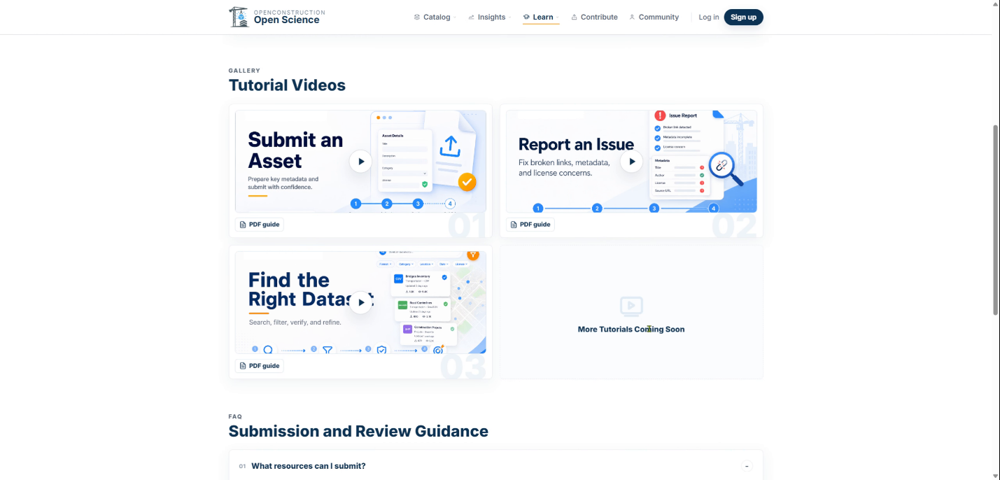
Review Documentation and Policies
The Documentation area provides more detailed guidance, including the OpenConstruction metadata schema, guides and frameworks, contribution guidelines, policies, references, and other technical documentation.
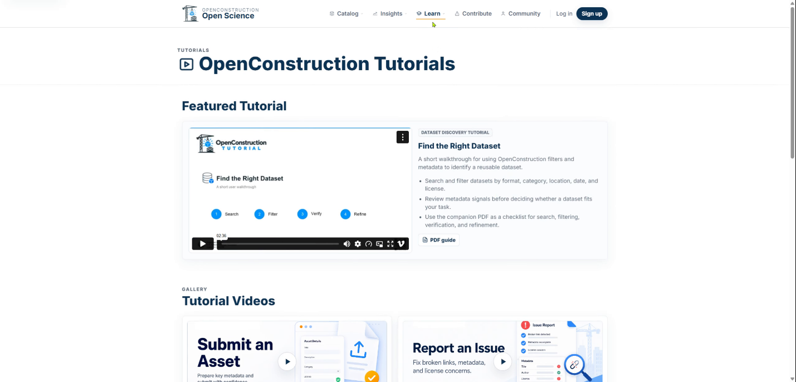
Save Resources in Workspace
Workspace is the interactive part of OpenConstruction. After signing in, you can save resources, organize them into collections, add notes, compare candidates, and export what you have gathered. Select Log in to access your account and personalized workspace.
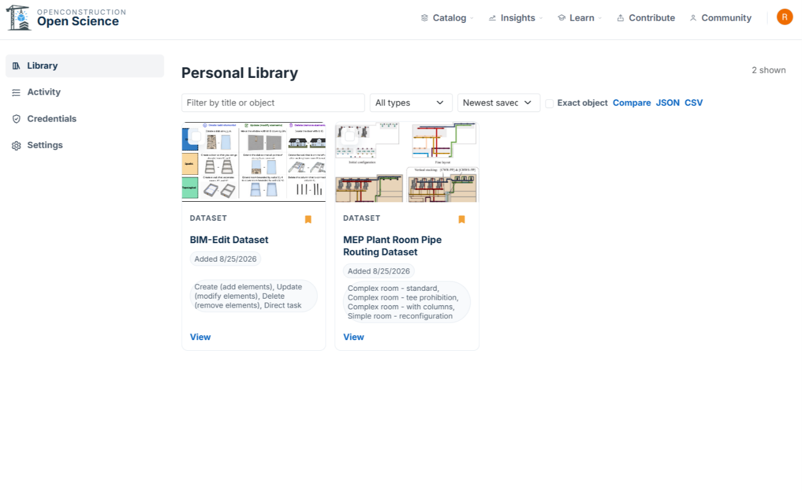
Contribute and Collaborate
Use Contribute when you want to add a new resource, improve an existing record, report a correction, or help steward the ecosystem. OpenConstruction is designed not only for discovering open resources, but also for improving and maintaining them collaboratively.
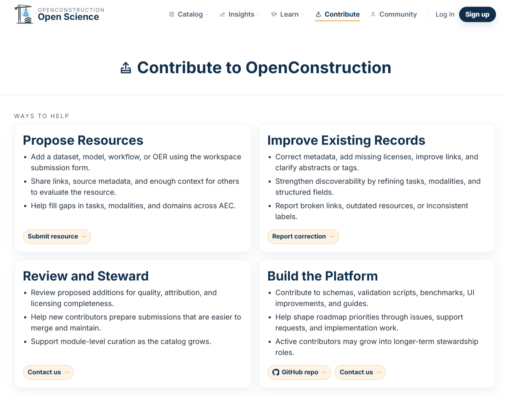
That is the big picture. You are now ready to explore OpenConstruction.